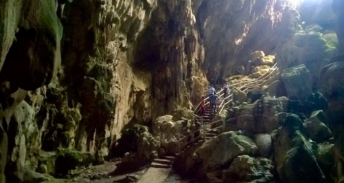
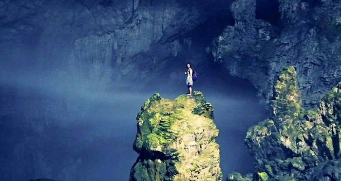
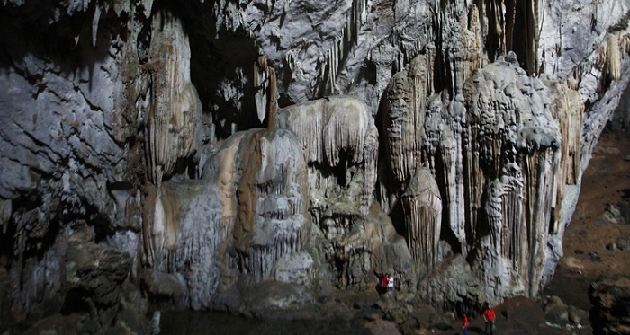
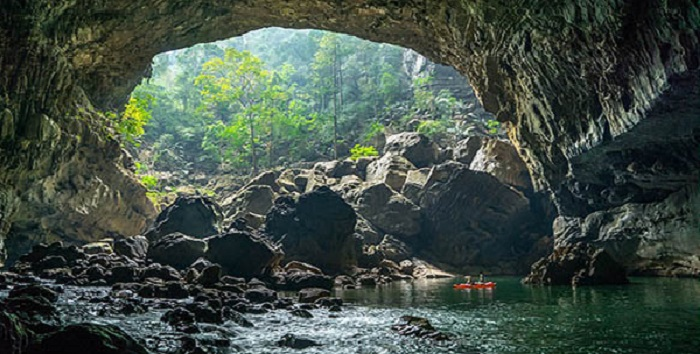
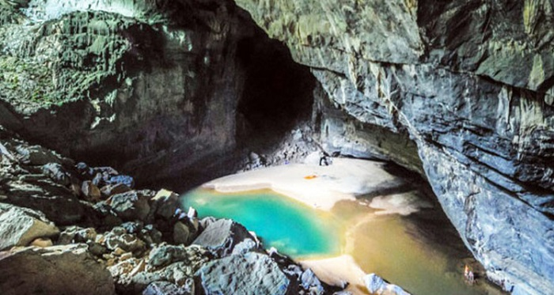
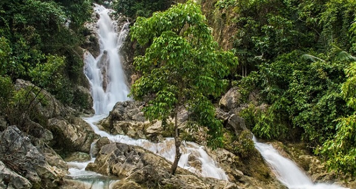
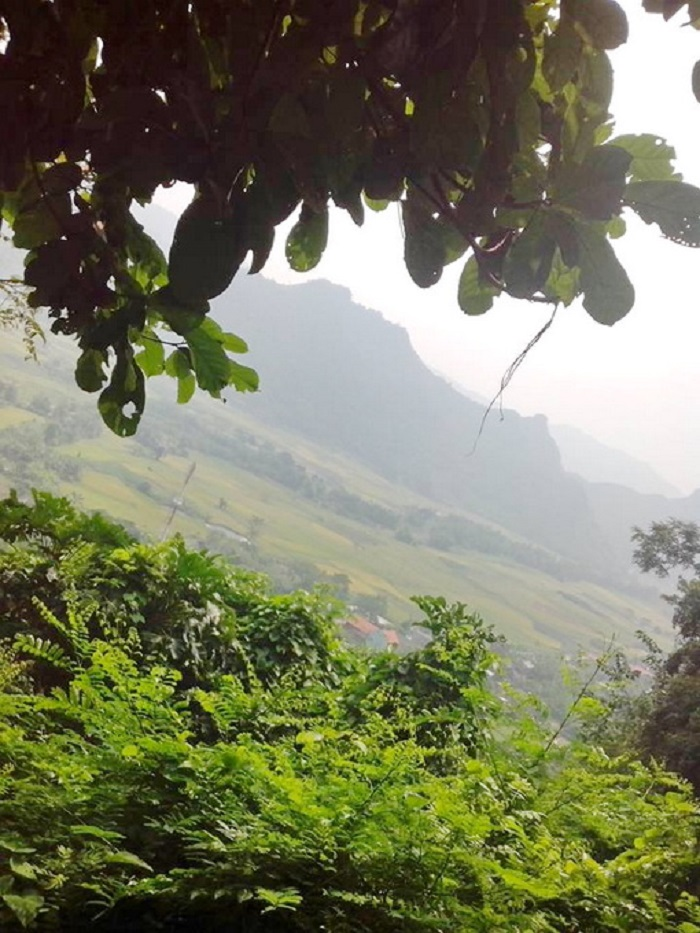

Thái Nguyên – Xứ sở chè xanh
Hang Phượng Hoàng – viên ngọc quý của vùng đất Thái Nguyên
Đến Thái Nguyên đừng bỏ qua Hang Phượng Hoàng - điểm đến vô cùng thú vị và hấp dẫn dành cho người yêu khám phá thiên nhiên.
Hang Phượng Hoàng là một khu thắng cảnh du lịch nổi tiếng ở tỉnh Thái Nguyên. Hang Phượng Hoàng nằm trên núi Phượng Hoàng thuộc xã Phú Thượng ,huyện Võ Nhai, cách thành phố Thái Nguyên 45km và nằm rất gần quốc lộ 1B ở vị trí sát ranh giới giữa hai tỉnh Thái Nguyên – Lạng Sơn. Hang Phượng Hoàng mang một vẻ đẹp hoang sơ, kì bí và xinh đẹp. Nơi đây được coi là viên ngọc quý đang được mài dũa để trở nên lung linh và lấp lánh hơn.

Sự tích về Hang Phượng Hoàng
Truyền thuyết kể rằng, ngày xưa trên núi có đôi chim phượng hoàng, chúng vốn dĩ sống rất hạnh phúc, sinh ra hai cái trứng. Ngày ngày, chim bố đi tìm mồi cho chim mẹ ấp trứng, thế nhưng vào một ngày nọ, chim bố bỗng quên đi nhiệm vụ và mải mê vui chơi với một đàn chim mái mới.
Do đó, chim bố đã quên không trở về, chim mẹ cũng vì thế mà ngày đêm buồn phiền, lo lắng. Đến một ngày chim bố cũng cũng nhận ra và quay trở về tìm chim mẹ, thế nhưng đã không còn kịp nữa, chim mẹ đã hóa thành đá vì nỗi buồn phiền chất chứa bấy lâu.

Quá ân hận trước hành động sai lầm của mình, chim bố vẫn nằm trên ngọn núi, vẫn chờ đợi và hi vọng chim mẹ trở lại bình thường, nhưng đợi mãi đợi mãi chim mẹ vẫn không thể trở lại như lúc đầu. Ngược lại, chim bố cũng vì chờ đợi mà hóa thành đá. Ngày nay, ở dưới núi nhìn lên, các bạn cũng có thể nhìn thấy hai hòn đá có hình giống hai con chim phượng hoàng. Và đây cũng chính là lý do mà người ta đặt tên cho ngọn núi là núi Phượng Hoàng.

Khung cảnh huyền bí và hùng vĩ bên trong Hang Phượng Hoàng
Hành trình đi đến Hang Phượng Hoàng quả thật là một chặng đường gian nan nhưng vô cùng thú vị, các bạn sẽ được trải nghiệm hành trình vượt qua những bãi đá mèo với độ cao khoảng 500m. Hang Phượng Hoàng mang một vẻ đẹp huyền bí và hùng vĩ, đến đây bạn sẽ được ngắm nhìn những tuyệt tác mà thiên nhiên đã ban tặng cho vùng đất Thái Nguyên.

Từ cửa hang bạn đã bắt đầu cảm nhận được vẻ đẹp rộng lớn, bao la và đầy những bí ẩn. Hai vòm cửa hang rộng và cao hàng chục mét. Bước vào trong hang bạn sẽ cảm nhận được vẻ đẹp thực sự lấp lánh và lung linh. Có lẽ vì thế mà người ta gọi Hang Phượng Hoàng là viên ngọc quý của Thái Nguyên. Khung cảnh ở đây thực sự rất huyền ảo với đầy những cảm giác ánh sáng khác nhau. Hang Phượng Hoàng căn bản được chia làm ba tầng: tầng thượng là hang Dơi, tầng giữa gọi là hang Sáng, tầng cuối là hang Tối.

Hang Sáng được coi là hang rộng nhất, có nhiều ánh sáng nhất, và cũng chính vì đặc điểm này mà hang Sáng có thể làm toát lên trọn vẹn vẻ đẹp cũng những nhũ đá. Thiên nhiên đã ưu ái ban tặng cho Hang Phượng Hoàng những tuyệt tác nhũ đá với những hình dạng phong phú như hình ảnh mẹ bồng con, con chim phượng hoàng cất cánh, hổ phục, kỳ lân,…
Đặc biệt, những vũng nước còn đọng lại trong hang sẽ mang màu sắc tuyệt đẹp bởi những thứ ánh sáng lung linh. Đây chắc chắn sẽ là chuyến đi đầy thú vị cho các bạn.

Đến Hang Phượng Hoàng và ghé thăm suối Mỏ Gà
Đã đến Hang Phượng Hoàng thì không có lý do gì mà các bạn bỏ lỡ khung cảnh thiên nhiên thơ mộng tại suối Mỏ Gà. Ngay dưới chân hang cách khoảng 100m, các bạn sẽ nhìn thấy suối Mỏ Gà. Đây là dòng suối có màu xanh ngọc cực đẹp, hơn thế nữa dòng suối này cực kì mát mẻ, nước trong veo, ngay cửa hang chảy ra tạo thành một thác nước nhỏ tung bọt trắng xóa.
Đặc biệt, suối Mỏ Gà có chỗ nước với độ sâu an toàn để các bạn có thể tắm mát và thư giãn trong không gian xinh đẹp, thơ mộng và lắng nghe tiếng suối chảy róc rách, âm thanh của núi rừng và cảm nhận tiếng gió reo, tiếng chim ca trong trẻo. Đến Hang Phượng Hoàng vào mùa hè sẽ giúp bạn đánh bay cái nắng oi ả, nóng bức. Đây chắc chắn sẽ là địa điểm lý tưởng để các bạn du lịch và nghỉ ngơi.

Hang Phượng Hoàng gắn liền với lịch sử
Đến Hang Phượng Hoàng, bạn sẽ có dịp để nhìn về và ngẫm nghĩ về những gì chiến tranh đã đi qua. Nơi đây là căn cứ địa Bắc Sơn – Võ Nhai năm xưa, nó chất chứa những truyền thống lịch sử hào hùng của thủ đô kháng chiến xưa. Vào ngày 27/11/1994 bằng một trận mìn, súng kíp, bẫy, giáo cùng chiến thuật đánh du kích, lịch sử đã chứng kiến đội quốc quân gồm 75 người và 373 hộ dân đã gây thiệt hại nặng cho một tiểu đoàn giặc Pháp.

Hang Phượng Hoàng chính là tuyệt tác thiên nhiên đã ban tặng cho con người và là viên ngọc quý của vùng đất Thái Nguyên. Đến đây, các bạn sẽ được sống trong khung cảnh vô cùng hoang sơ, hùng vĩ và đầy ắp tình người.